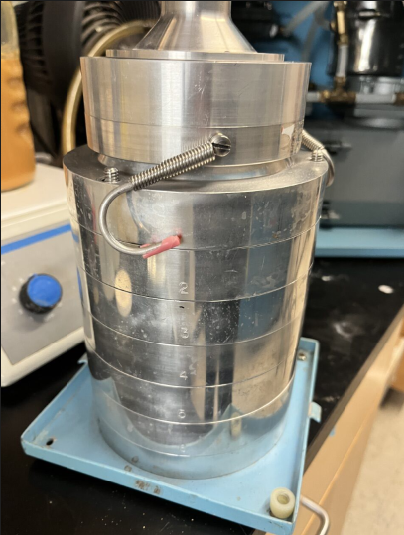

Lab Procedures & Notes
Note
Here I included some of my lab notes when working at Chorover’s lab.
Typos could be found on these lab notes, as English is not my native language. If you find some, please let me know to make the necessary corrections. Thanks!
This is an ongoing work and a gift for Rob, to give him some rest from repeating the same information every time someone joins the lab xD
1 ADMINISTRATIVE PROCEDURES
Note
- This procedure is valid if you are on campus, but if you are not, you can connect to the university VPN, through the following app: Cisco Secure Client.
Connect to VPN (just if you are off campus)
- Download Cisco Secure Client here
- Set it up as follows:
- Sign in with your university NetID
BuyWays
- Uacces
- Financial
- NetID
- More Items
- Orders
- Shop catalogs
- In the search tool, write what you’re looking for (Catalog number, Product number or SKU number)
- Add to cart
- View my cart
- You can only do one supplier at a time
- Proceed to Uaccess Financials
- Document overview (Description, Explanation
- Delivery -> Search -> Building Code = 38 -> Return value -> Room # = 518 ->
- Items -> Setup distribution -> Account number. *Check that the name of your project is under the account number* -> Object -> Code for chemicals (5280) -> For not chemicals (5290) -> PLUS SIGN -> In the second, level Distribute to Items -> In Item Type for Chemicals is Quantity tax exempt, but for any other supplies Quantity Taxable.
- At the bottom click CALCULATE
- SUBMIT
Important
Risk Management WONT pick up stuff with no labels on it. They will leave it right there, and they wont come back until next month.
The hazardous waste pick-up happens the SECOND Thursday of every month. You have to schedule it with enough time so they can pick it up and bring you extra tanks and tags for the chemicals.
Remember to check the fulfillment of the required safety training in the Research Laboratory and Safety Services.
If you purchase a new chemical, make sure to add it to the chemical inventory.
Use this link to order the Liquid Nitrogen, or any gas you may need for your lab work.
Hours of Operation: M-F 8:00AM to 4:00PM
Pickup 8:30AM to 11AM
Cryo Closed 11:30AM to 12:30PM daily
The Liquid Nitrogen we order is: Liquid Nitrogen, Refrigerated (Class 2.2 UN1977 Non-Flammable). Please specify the quantity in liters. MAX 60 liters/order.
We order 10 Liters (30 pounds) for the big bin.
Safety measurements to consider:
Use the required cryogenic gloves and a face shield to handle Liquid Nitrogen.
Make sure empty cylinders are labeled or tagged.
Make sure caps are in place when not in use
Cylinders are secured, not blocking exits or pathways and stored upright in racks, straps, chains, or stands.
Extracted from the University Chemical Hygiene Plan
- Look for the “Remote Desktop Connection” app in your computer.
- Enter the name of the computer you want to access remotely in the blank space. The one in 518 lab is: cals-envs22-45.bluecat.arizona.edu
- Log in with your NetID Catcard credentials.
- Look for the Geochemist Workbench Program.
- In case you need access to the VPN, follow the next link to Download, Install, and Log in to the VPN on your computer (this will only let you log in if you are outside campus; I don’t think it will let you log in if you are on the on-campus network).
2 ANALYTICAL PROCEDURES
| Analysis | Volume needed |
|---|---|
| ICP-MS / ICP-AES / Arsenic Speciation | 3 mL |
| Total Organic Carbon, Total Carbon and Total Nitrogen | 17 mL |
| Ion Chromatography | 1 mL |
| HPLC ICP-MS | 300 uL (micro Liters) |
| HPLC electrospray ionization (ESI) MS | 1 mL |
| Ferrozine method | ALEC does not run this. Fan/Fan method |
| TOTAL VOLUME NEEDED PER SAMPLING POINT: | 25 mL |
Equipment:
Inductively Coupled Plasma Mass Spectrometer (ICP-MS)
8900
7700-X
Important
- All ALEC samples need to be filtered with 0.45um filters before submitting them to the lab
- Use metal-free centrifuge tubes.
Steps
- Prepare a batch of 2% of High Purity Nitric Acid (HNO3)
- Take 1 mL of the sample
- Add 7mL of EDTA 0.25M for As Speciation. this EDTA step messed up the tubing on the ICP-MS machine so be careful
- Add 2 mL of HNO3
- Total volume of the mix in the tube: 10 mL
- Dilution factor = Final Volume / Initial Volume = 10/1 = 10

HNO3 at 2% is prepared:
- 20 mL of UHP HNO3 from the purchased bottle
- 980 mL of DI water
Equipment:
Ion Chromatography- Dionex ICS-6000
- 2 mL of the sample
- Nothing else is added to the samples
- Prepare a batch of 2% of Hydrochloric acid (HCL)
- Take 1 mL of the sample
- Add 9 mL of HCL
- Total volume of the mix in the tube: 10 mL
- Dilution factor = Final Volume / Initial Volume = 10/1 = 10
2.0.1 Materials:
- Ferrozine 5 grams container
- Ferrous Ammonium Sulphate 500 grams container
- Ammonium acetate in 245 or 518
- Spectrophotometer (We have one in 508).
- Brand: Fisher Scientific
- Model: AccuSkan FC microplate photometer
- Catalog number: 14377575
- Wavelength filter for Iron should be 562 nm.
- Buy it here: ThermoFisher
- Catalog number: 1425605
2.0.2 Sample preparation
- Complex is stable Between pH 4 and 10
- Concentrations Between 0.01 - 3 ppm or between 2 – 10 ppm.
- Match the metrics of your sample: Ionic Strength or Acid concentration
- Use the cuvettes the same orientation always.
- Add 100 microL of Ferrozine to all cuvettes. Including the blank, standards and samples.
- Add 50microL of Buffer to all cuvettes and wait 5 minutes to color development.
2.0.3 Spectrophotometer
- Turn on the spectrophotometer 15 minutes before the measurements
- Set wavelength to 562 nm.
- Use the cuvettes the same orientation always
- Put the blank into the spectrophotometer and press the ZERO key.
- Measure the standards and samples in the same manner and record the Absorbance values. As soon as possible to avoid degradation of color complexes.
- Remove the samples from spectrophotometer.
- Absorbance values above 2 are meaningless. Try again diluting them.
- Plot Absorbance VS Fe(II) ppm
Equipment:
Carbon/Nitrogen Analyzer- Shimadzu TOC-L (Total Organic Carbon) + TNM-L (Total Nitrogen)
Sample prep:
- 5 mL of the sample
- Nothing else is added to the sample
For a 1:2 solid-to-solution ratio
- Calibrate your pH probe daily, with a 3-point calibration using standard buffer solutions (pH 4, 7, and 10)
- Get 5 g of tailings
- Add 10 g of DDI water (distilled deionized, 18.3 MΩ cm)
- Rotate for 1 hour at 25 ᵒC
- Centrifuge at RCF of 10,500
- Measure the pH and EC on the supernatant
3 SPECTROSCOPY
Download the Orange Book here

The link above contains the scanned version of the synchrotron visit logbook with all the notes taken during synchrotron visits, from page 1 to page 233 of the logbook (last synchrotron visit scanned: December 2024). This helps identify the labels used on the data files scanned and if there were specific observations to note during the synchrotron visit.
Remote Access to SSRL data
- Download the WinSCP app here: WinSCP
- This app will require you to input the information of the folder that you need to access remotely.
- Fill out the information required:
- Host name
- User name
- Password
3.0.0.1 XAFS Data processing
This example shows how to use Larch from Python/Jupyter for basic XAFS data processing:
- read data from an Athena Project File
- do XAFS background subtraction with autobk()
- do XAFS Fourier transform with xfft()
https://github.com/xraypy/xraylarch/blob/master/examples/Jupyter/XAFS_Processing_matplotlib.ipynb
3.0.0.2 Iron K-edge processing example
https://github.com/xraypy/xraylarch/blob/master/examples/Jupyter/Fe-treatment.ipynb
3.0.0.3 XANES PCA train
https://github.com/xraypy/xraylarch/blob/master/examples/Jupyter/XANES_PCA_example.ipynb
3.0.0.4 FEFF Fitting
https://github.com/xraypy/xraylarch/blob/master/examples/Jupyter/feffit_cu_3paths.ipynb
The link to the manual for data analyses of XAS is at this link: XAS Analysis Manual
References:
Webb, S. (2006). XRD-BS. https://www-ssrl.slac.stanford.edu/~swebb/xrdbs.htm
Webb, S. M. (2005). SIXPack a Graphical User Interface for XAS Analysis Using IFEFFIT. Physica Scripta, 1011. https://doi.org/10.1238/physica.topical.115a01011
For samples analyzed at SSRL:
SAMS VIEW
- Add many files. All must be scan replicates of the same sample (files must be .xdi or .dat)
- Detector: Germanium (most commonly).
- Press Apply All.
- Channel
- 1 for Arsenic. Or,
- 2 for Iron (check notebook)
- Calibration. To shift my value of gold to wherever the peak of gold is on my muT2 Plot Type.
- Derivative must be First. Second one is too noisy.
- Replot
- Select the scan you want to calibrate.
- Press Find Data E0. This finds the peak for you. It must be around 11919 for gold.
- Apparent: the one it finds
- Actual: 11919 (gold)
- Press Enter
- Press Apply Shift to Data. It will apply the shift that it found.
- Clean the channels with weird data:
- Plot type: Column
- Derivative: None
- Column section:
- IFall (to see all the channels plot at once)
- IFind (to check channel by channel individually)
- Zero Selected Channel: for channels that are not working correctly
- Plot Type: muF
- Derivative: None
- Stack All Plots
- Save
- Group Spectra
References:
- Ravel, B., & Newville, M. (2005). ATHENA, ARTEMIS, HEPHAESTUS: data analysis for X-ray absorption spectroscopy usingIFEFFIT. Journal of Synchrotron Radiation, 12(4), 537-541. https://doi.org/10.1107/s0909049505012719
3.0.0.5 DATA NORMALIZATION
- File
- Import Files: your average .xdi file
- Numerator: u
- Denominator: nothing
- OK
- Emax: 1100
- E0: Depending on the element you are looking for, see below:
- 11885 for Arsenic
- 7125 for Fe
- 6565 for Mn
- 13100 for Pb
- Deglitch and Truncate
- Locate this option on the Drop Menu under Main Window
- Truncate Data if you need to drop the last 3 data points (e.g. fluorescence from 11-2)
- Select the point you want to truncate at the end of the data. (Erase the last 3 points).
- Main Window
- Shade the first sample
- On the Normalization Section:
- Pre-edge range: from -150, to: -70.
- Normalization range: from 150, to: target the end of your curve
- With this, you are Normalizing the data, so the Edge step is [post-edge line - pre-edge line], this may have gotten a value of around 0.something.
- Choose the type of Normalization that will make the pre-edge and post-edge line to be almost parallel for your sample.
- Normalization order
- 1 = no slope, (this one is UNcommon)
- 2 = linear slope,
- 3 = quadratic function
- Normalization order
- Forward Fourier transform parameters
- K-range should be the same in ALL the samples
- Mark all your samples.
- Group
- Set marked group values to current.
- Finally, mark all your samples.
- File
- Save EACH marked current group as:
- Normalized E
- Save EACH marked current group as:
3.0.0.6 LINEAR COMBINATION FITTING (automatic)
NOTE: For this process you must have all the scanned standards possibly existing on your system, to get how much percentage of each species is present on your sample.
Load your standards and sample files.
Shade your sample, do not mark it.
Mark your standards.
On the drop menu, look for the option: Linear Combination Fitting
Press Use Marked Groups.
On the Combinatorics section: select the number of standards you are using on the combination.
- Use at most ____ standards (the amount of standards you are using).
Beside the enlisted Standards, there is a “Required” checkbox, check it for your initial and ending species.
Press “Fit all combinations”
Results will be shown on the “Combinatorics” tab.
- The first combination on this list is your best fit, the one with the lower R-factor.
- The weight for each component is the percentage of the composition of your sample.
Save combinatorial results as an Excel file
Unselect your standards and select JUST the samples.
Now under the Standard tab, we have the correct weight parameters from the Combinatorial.
Press “Fit Marked Groups”, for all the scans to be fitted to this parameter.
Under the Sequence tab, we have all the scans with the composition of each (see column titles of the table), and the concentration of each.
Save that table by pressing “Save fit sequence report as an Excel file”
We can plot that data with “Plot components from fit sequence”.
3.0.0.7 International XAFS Database Portal of the Japanese XAFS Society
Masashi Ishii, https://ixdb.jxafs.org/, established in 2024.
Reference:
Ishii, M., Matsuda, A., Sakamoto, K., Yamashita, S., Niwa, Y. & Inada, Y. (2025). J. Synchrotron Rad. 32, https://doi.org/10.1107/S1600577525002206.
3.0.0.8 Solid Spectroscopy Hosting Architecture of Databases and Expertise
3.0.0.9 International X-ray Absorption Society (IXAS) Data Library
Computer Password: UCMerced2014
Equipment: Nicolet Magna-IR 560 Fourier Transform Infrared (FTIR) Spectrometer
Transmission = pellet sample
ATR = Point sample
3.0.1 ATR-FTIR
Important
FIRST THING: ON THE MACHINE, PRESS THE BUTTON BESIDE THE ATR ACCESSORY UNTIL IT LIGHTS ON BLUE, MEANING THE ATR MODE IS ON.
ALWAYS check that, while scanning each sample, your Background AGE is showed in the lower-right end of the screen. This way you make sure that you are substracting the background when scanning your sample
What is this technique doing?
This technique applies a heat source that bounce the molecules inside your sample (the red laser observed is not the source, it is just for guidance). Part of the heat is going through the sample and part of it is surrounding it. Then the waves converge together and they are cancelling and constructing each other. That’s when the Fourier transform computation happens in the computer, bringing up the plot of Absorbance VS. Wavelength. Some molecules don’t respond to heat, nitrogen in the air doesn’t, so that’s why there is a nitrogen vacuum inside the machine, because it wont affect your sample measurement.
Some peaks of interest for ATR in your sample:
- Hydroxides are on 3400 cm-1
- Aluminum hydroxides are on 3600 cm-1
- Silica is from 1030 to 1100 cm-1
3.0.1.1 Sample prep
There are 2 types of tip on the ATR accessory:
- one is concave for bigger grains like sand,
- the other is flat for clays and finer soils.
Clean the surface of the machine with a wipe containing ethanol.
Put your sample over the red laser (this is just an indicative of where to place it, it is not the radiation source)
Close the sampler until you hear 2 clicks.
Random setup (check if this apply to you, if not ignore)
- Bach - Minimum range limit = 400
- Gain 1 = Autogain -> SAVE
3.0.1.2 OMNIC Software
Check that the top of the window says Experiment: iS50 ATR
Window -> New Window (This step is in case there was someone working previously and left their work plotted there.)
Experiment Setup
- Collect -> Number of scans: 64 -> Collect Background after 120 minutes -> Save
Collect Background (humidity always looks the same: 3 peaks between 2800 to 2000)
- Start Collection (Up-right corner)
- A message will come after saying the data collection has stopped. Add to a new window? YES!
- File -> Save As -> Set Filename to Title -> Save it as 3 formats: SPA, SPC, CSV
- Go again to Experimental Setup
- Collect -> Use specified Background file (Choose the one you just saved. Get a new background every 4 hours) -> Ok
- You can check the age of the background on the low part of the plot.
Run a blank sample to check if it looks entirely flat, that means that the background is being substracted correctly.
- Collect Sample -> Fill the sample ID name (BLANK SAMPLE) –> Ok
- Start Collection (Up-right corner) -> Add to Window? YES!
- Common Scale. (Or Full scale if you prefer to see your sample closer.)
- File -> Save As -> Set Filename to Title -> Save it as 3 formats: SPA, SPC, CSV
Load an actual sample to scan.
- Collect Sample -> Fill the sample ID name –> Ok
- Start Collection (Up-right corner) -> Add to Window? YES!
- Common Scale. (Or Full scale if you prefer to see your sample closer.)
- File -> Save As -> Set Filename to Title -> Save it as 3 formats: SPA, SPC, CSV
NOTE: To erase the background from the plot so it doesn’t bother you, you can select it until it is red color, and then go to: Edit -> Cut.
Sample Normalization
- Process -> Normalize Scale (sensitivity to more peaks)
- Auto Baseline Correction (for the plot to start at zero)
- Analyze -> Search Peaks
- Common scale
GRAMS Software
- This software is used to analyze the sample files.
- The RUFF database has FTIR and XRD data for you to compare and find out different minerals.
4 MINERALOGY
You can get the .CIFF files for minerals at the RUFF database.
References:
Webb, S. (2006). XRD-BS. https://www-ssrl.slac.stanford.edu/~swebb/xrdbs.htm
Downs, R.T. and Hall-Wallace, M. (2003) The American Mineralogist Crystal Structure Database. American Mineralogist 88, 247-250. Link to paper
This procedure applies if you analyze your samples at Craig Rasmussen’s lab.
Important
- Request permission from Craig Rasmussen before using their facilities. Also, this machine emits radiation so you have to be approved by RLSS to use it.
- When running samples during the Monsoon season, the Tension and Current to use in the software will be 20 kV and 10 mA, respectively. For the rest of the year, it is 45 kV and 40 mA, respectively. This is because of the shortage of electricity during Monsoons.
- After finished, change back the current and tension to 20kV and 10 mA to protect the machine. NEVER turn it off.
NOTES:
The yellow light on the machine means it is shooting X-rays. The sample analyzer is delicate. Do not touch the doors because they are sensitive.
The sample holder can take 15 samples per round of analyses.
It takes around 1 hour and 45 minutes per sample to run a Quantitative scan.
4.0.1 Sample prep
- Find the Corundum (alpha-Al2O3) in the desiccator. Heat the Corundum in the oven for at least 1 hour at 550 Celsius. Let it refresh for 1 hour. Store the Corundum on the desiccator when all the work has finished. -`If using toxic samples, prepare them in the fume hood.
- Using the Agate Mortar (or the ball mill), mix 1.5 gram of your sample, with 0.23 g of Corundum (meaning 15% of your sample). Take notes of the mass of sample, and Corundum used for each one. You need these data to fit your results afterwards.
- Clean the mortar and sample holder with Ethanol in between samples.
- Load your samples on the rings
- Overload a bit the ring and compress it. (Each ring will consume approx. 1.5 grams of your sample).
- Write your sample’s ID with a Sharpy over the ring.
4.0.2 Start set up
Log Notebook:
- Check the tube counter and fill out the notebook log.
- Got to: System Maintainance -> Tube Counters -> TOTAL
- Take note on the before and after that number.
- Add your name on it, and the samples you intent to run. At the end of your analyses, you have to add the tube counter number, so everyone knows how many each person used.
Water refill:
- Check the water level and the filler on the back of the lab. Fill them with super clean water, such as UV Reverse Osmosis water. Craig buys gallons of that treated water, ask him to repay the amount of water you used with your project’s budget.
Computer:
- Username: XRDAdmin
- Password: braggX431
X’Pert Data Collector Software:
- Username: Craig
- Password: tippy
- Connect to the instrument, and click ok for the message that comes in.
- Click on “Instruments Settings” -> X-Ray -> Tension: 45 kV -> Current: 40 mA -> Apply (you’ll see the tension numbers changing on the machine)
Creating an analysis program for your samples
- File -> New Program -> Sample Changer Batch -> OK -> Insert -> Parkash 5.70 -> Change The Folder -> New Folder -> Rob Root (if you are part of Chorover lab, put all your data inside Rob Root’s folder, with your name) -> Change the file name and put your sample’s ID -> Fill out the Positions (#1, #2…). Do it 15 times because that is the maximum of samples the sample holder can get per time.
- Hit the Disk button -> Save Program As -> Use “Craig” as the user.
After loading your samples to the machine
- Measure -> Program -> Select the program you just created for your samples -> OK
- Bring a USB to extract your data.
- The files will be on .XRDML format.
- You can analyze that data with RockJok or X’pert. Check out the other sections of this repository to know how to analyze them.
After finished, change back the current and tension to 20kV and 10 mA to protect the machine. NEVER turn it off.
This analysis uses Full Pattern Summation and the “powdR” package to analyze x-ray diffraction patterns.
Research paper: powdR: An R package for quantitative mineralogy using full pattern summation of X-ray powder diffraction data.
References:
Chipera, Steve J., and David L. Bish. 2002. “FULLPAT: A full-pattern quantitative analysis program for X-ray powder diffraction using measured and calculated patterns.” Journal of Applied Crystallography 35 (6): 744–49. https://doi.org/10.1107/S0021889802017405.
- “Fitting Full X-Ray Diffraction Patterns for Quantitative Analysis: A Method for Readily Quantifying Crystalline and Disordered Phases.” Advances in Materials Physics and Chemistry 03 (01): 47–53. https://doi.org/10.4236/ampc.2013.31A007.
Eberl, D. D. 2003. “User’s guide to ROCKJOCK - A program for determining quantitative mineralogy from powder X-ray diffraction data.” Boulder, CA: USGS.
4.0.3 XRD Process Optimization
- pH stability
- Selection of minerals based on the pH of the sample, prior to doing the Full-Pattern Summation
- Adding more minerals to Rockjock
- Adding Alunite and the other 20 to the Rockjock library
- Found Alunite in XAS
- Discovered Alunite through XAS (Jarosite but with Al instead of Fe). showing the need to wider the Rockjock library with other minerals.
- Xpert is a slow process
- Checking which site has Alunite in Xpert one by one is a long process
- Full Pattern Summation with Rockjock library
- Instead, check the sites automatically through Full Pattern Summation with the Rockjock library
- VESTA to get XRD
- CIFF files were used to get the XRD through VESTA Wavelength Copper 1.5406 2theta range: 5 – 65 Step size: 0.02
We use the X’pert HighScore program to analyze the data with Rietveld Refinement.
📄 XRD Standard Operating Procedure
The following document was made by Alexander Ederer and edited by Xenia to add some Reitvield analysis steps.
- Heat the Corundum (Aluminum Oxide) in the oven for 3 hours at 550 Celsius. The fume hood from Sam Rathke (srathke@arizona.edu) located at 503 lab works well for this.
- Use 1.5 gram of your sample, with 0.23 g of Corundum (meaning 15% of your sample’s weight).
- Use the ball mill to shake your sample with Corundum for 3 minutes.
- Clean the ball mill between samples with Ethanol.
- Then shake the ball mill with just Sand for another 3 minutes.
- Then proceed to shake your following sample.
- If you are not analyzing your samples yourself, you can send them to the Chemistry & Biochemistry Lab (Andrei Astachkine: andrei@arizona.edu)
The following chart from USGS helps identify the different clays using the separation in Armstrong. You can download that chart on the following link. (I recommend PDF format for more readability).
USGS OFR01-041: Clay Mineral Identification Flow Diagram. (n.d.). https://pubs.usgs.gov/of/2001/of01-041/htmldocs/flow/index.htm

5 PHYSICAL PROPERTIES
Important
DO NOT grind your samples before this analysis because you would be adding more surface area than the original specific surface area of your material.
Liquid Nitrogen must be ordered beforehand, and it can be picked up from the Cryogenics Facilities from 8 to 11 a.m. on weekdays. (See Administrative procedure for this, the link to order is there)
NOTES:
The sample degassing pre-treatment for mine tailings takes about 12 hours, previous to the actual measurement.
The Black Carbon standard sample (BC) should be done daily first thing before analyzing any of your samples. It should show an SSA of about 21 m2/g.
The software used is called Gemini VII Version 3.04
The machine used is Micromeritics
5.0.1 Sample preparation:
- Check that the Gas Nitrogen is available for degassing, and also Liquid Nitrogen for the measurement
- Weight a clean, empty tube, and write down the weight on the lab notebook.
- Fill it with a sample using the metallic funnel. These tubes are very fragile, so be careful.
- Weight the tube+sample, and add that on the lab notebook.
- Degas the samples overnight with a temperature of 45 Celsius because I’m using tailings. (If I increase the temperature I could convert my ferrihydrite to Goethite, and we don’t want that.)
5.0.2 Computer procedure: Gemini program
- Measure the Black Carbon sample (BC) first thing daily. It should show an SSA of about 21 m2/g.
- Press: “Start Analysis”
- Next
- New
- Method: Specific Surface Area
- Sample: insert name (The way of saving a sample is: “YearMonthDay””sampleID””yourInitials”, example: 20230121_Keating_XD)
- Operator: insert your initials
- Calculate
- Empty Weight
- Sample+Tube Weight
- Save As: same as sample name (.SMP file is the default, use that one)
- Once your weights appear in the “Analysis” screen, you can press Start.
Important
If you have an error in the computer, take a screenshot and save it in the PPT that is open in that computer.
Important
- DO NOT grind your samples before this analysis because you would be changing the original particle size of the sample.
This is done with the Laser Diffraction from Marcel Schaap’s Lab.
Request permission from him before using their facilities.
Equipment: LS-13-320 Laser Diffraction Particle Size Analyzer
📄 Laser PSA Instructions
The following document was made by Mohaddese Effati and edited by Xenia for the analysis of mine tailings.
5.0.3 HYPROP for Soil-Water Characteristic Curves
Work in progress…
5.0.3.1 Sample prep
- Pack the HYPROP cells with sample at a bulk density equal to 2.2 g/cm3
- To get that bulk density, we need to fill 525 g of material inside the 250 mL metal ring. Bulk Density = Mass / Volume = 525 g / 250 mL = 2.1 g/mL
- Start filling the ring with sample until you get a height of 1 cm of material.
- Compact it very well, and scratch the surface a little in 2 directions, like a cross.
- Add another 1 cm layer of material, compact and scratch the surface.
- Repeat again until you full 525 g of material inside the ring.
5.0.4 WP4-C
This is for the Dry part of the Soil-Water Characteristic Curve:
5.0.4.1 Bulk Density
- Get the field bulk density of your sample and fill the cell called “B.D.” in the excel template that Mohammadreza prepared.
- If necessary, bulk density can be obtained by filling a cylinder with known volume, with the soil, and weight the soil. Bulk density = soil mass/ volume of cylinder.
5.0.5 Moisture % for dry part of the SWCC
- Weight each stainless-steel cup and insert that value on the cell “M_c”. Put the name of each sample on the stainless-steel cup with a Sharpy.
- Bring your dry soil samples and take around 4 grams of each and put each on the stainless-steel cup. We need to preselect specific moisture content values for the dry part of the curve we are interested in studying. - This values can be based on the approximate known dry water content for each site. For example, if you know from previous studies an approximation of the dry water content, then the values should be around that. In this case we are selecting: 1% (0.01), 5% (0.05), 10% (0.10), 15% (0.15) and 20% (0.20). Insert these values on the cell called “th_v_1”.
- The spreadsheet will indicate on the cell “M_w_1” how much water you should add to each sample to get the desired moisture content.
- Add the amount of water to each sample, cover with the lead, cover it with aluminum foil, put all your samples in a Ziploc bag to avoid loss of moisture by evaporation. Put them in the fridge for 3 days.
5.0.6 WP4C calibration
- Turn on the WP4C at least 15minutes before start using it.
- Take your samples from the fridge and put them on the Temperature Equilibration Plate at 23 Celsius.
- Using the Southeast button, verify that the temperature difference is always negative (Ts – Tb).. Then press the same button to go back to the main menu.
- Poor the standard solution KCl in one of the cylinders and insert it to the sample holder. (The lead doesn’t fit the WP4C, so insert just the cylinder with no lead).
- Press the Southwest button to go to the calibration menu. Then press the Northeast button to start the calibration. - Rotate the button until it is on the READ option.
- It will take around 15 minutes, until it makes a peep sound, and flashes 3 times a green light.
- The pressure result for the calibration should be -2.22 MPa. If it is not that, you can arrange the value (+ -) in the screen of the machine.
5.0.7 WP4C readings
- Take out the KCl standard and insert your sample in the sampler holder. Read it. It will take around 15 minutes.
- Take note of the tension in Mpa. Fill that value in the template in the cell “h”.
- Immediately read the weight of the sample in the balance. Fill it out in the cell called “M_c_ws”.
- Change to a new sample to read it.
- After reading all the samples, put them in the oven with no lead for 24 hours at 105 Celsius.
- Read the dry weight of each sample after the 24 hours. Insert that value o the cell called “M_c_ds”.
- Insert all this information into the Excel template made by Mohammadreza to get the water content equivalent to each matric potential
6 LAB TOOLS & EXPERIMENTS
The thesis of previous Chorover students help a lot with figuring out the steps to take for your experiments.
- Download the RS Key program: Download here!
- Set up your interface in the same way as in this image:
- Check on your computer devices (Bluetooth and devices -> Devices), for the port com number, and use that number for the RS Key program.
What this machine does is that it drys the sample through Sublimation, which is when solid water goes to vapor.
- Bring your samples frozen.
- Put kimwipes as cap of the container of your sample, tied with multiple rubber bands, so the vacuum can be applied and it can dry the sample, but still you particles don’t run into the vacuum.
- Put the black rubber cap on.
- Grey cap connects to the black piece.
- If the tilted side of the grey cap is on the opposite direction that the transparent tube connection spot, then it is not connected to the vacuum so you can go ahead and insert the samples.
- Insert your samples carefully because the glass container can break if you throw them.
- Add a paper filter to the tube connected to the central chamber, as a way to protect the central chamber from the particles of your samples.
- Now you can connect your samples to vacuum, by rotating the grey cap by 180 degrees, until the tilted side of the grey cap is aligned with the transparent tube that goes to your samples, allowing them to connect to the system.
- The black hose goes on the base of the machine needs to go on the trash can in case there is any oil spilling.
- Press AUTO. The vacuum has to end below 300. The temperature should be -40.
- Leave the sample for 48 hours
- If the sample is still cold, there is still water on it, if it is room temperature, it is dry.
Important
- Change the oil once a month. There is a signing spreadsheet on the bench to check when was the last time it was changed.
Important
- “CE” clears the alarm, if it ever get activated.
- Metal Free Tubes maximum speed is 1200 RCF.
- Ultra 30 mL darkish tubes, have a maximum speed of 1500 RCF.
- Clean the rotors with wipes or water.
Set up:
- Turn on the centrifuge (it cannot open until you turn it on)
- Check that the rotor and lead that you choose are same model.
- Weight the tubes with sample that you are using, as you will have to balance them out by putting them in opposite directions on the rotor.
- Lock the 2 leads on the rotor
- Big lead = cover for the rotor
- Small lead = core holding the entire rotor
Software:
- On the buttons of the rotor:
- Select rotor
- Rotor
- (look for the name of the model of rotor you are using)
- Set the Max speed of rotation. You have 2 options:
- RCF (this one is to report on the manuscripts, Jon likes this one, because it doesnt change by the rotor).
- RPM (do not recommend using this one)
- START
Work in progress…
Airlock On (to extract the oxygen). Cycle the Airlock. Open the valves of the tanks:
- Vacuum
- Nitrogen
- gas Mix (It has Hydrogen, combined with O2)
If it says Anaerobic, its ok.
- Cycle it with nitrogen?
- Off
- Cycle button
- Off
If the hydrogen is below 2%, on the Starlock again until we get to 2% of Hydrogen.
When leaving, vacuum the Starlock a little, and then gas it a little.
At the end of the day, close the valves of Nitrogen and Hydrogen gas.
Work in progress…
Important
- Bring your samples already sieved as close as you can to 10um. We have a 50 um and 20 um sieve.
- This process must be done inside the fumehood. Use masks, googles, gloves and labcoat as particles could get into your body.
We have cyclones at the lab for the following sizes:
- PM10
- PM2.5
- PM1.0
But we also have the Andersen Sample Impactor which give us a smaller and more classified range of particles.

The Andersen is composed of the metallic screening layers, and the air pump.
In order for the Andersen to work accurately as it was designed to work, the pump needs to be set up at 1 ACFM = 59 SCFH = 28.3 liters/min.
The sizes of each mesh are explained in the diagram below:
The pump has to be ran at 1 ACFM (28.3 liters/min) always for the particle diameter range to work as the diagram. There is already a line drawn on the flow meter at 59 SCFH, which corresponds to the flow it should be running.


After done with it, check the size of your particles with SEM to be sure they are correct.
Nick Buchanan’s thesis (2023) is good to learn this process.
Phase 1: Water-soluble solids
(bioaccesibility and high mobile elements) (2 hour)
- 50 mL samples of 1:100 solid to solution with DI water (18.2 M) (1:100 Example = 0.1 g of tailing mixed in 10 mL of DI water)
- 1 hour shaking
- XRD before and after the DI water
- 30 minutes centrifuged at 10,000 RCF
- Supernatant: Decant and filtrate using 0.45 um. Store in 15 mL metal-free polypropylene tubes (VWR) at 4 Celsius. Add 5 drops (~100uL) of HNO3 before the fridge, for ICP-MS.
Phase 2: Exchangeable fraction
(exchangeable cations bound to particle surfaces)
(2.5 hour)
- 1 M Ammonium Acetate at pH 5
- 2 hour shaking
- 30 minutes centrifuged at 10,000 RCF
- Supernatant: Decant and filtrate using 0.45 um. Store in 15 mL metal-free polypropylene tubes (VWR) at 4 Celsius. Add 5 drops (~100uL) of HNO3 before the fridge, for ICP-MS.
- Solid pellet: DI wash at 1:100 ratio. Rotate for 30 seconds, centrifuge again at 10 000 RCF, decant, and filter with 0.45 um. Add this new supernatant to the previous supernatant. The left pellet will be used for the next reagent.
Phase 3: Specifically adsorbed Arsenate
(bound in inner-sphere complexes)
(25 hour)
- 1 M Sodium Phosphate at pH 5
- 24 hour shaking
- 30 minutes centrifuged at 10,000 RCF
- Supernatant: Decant and filtrate using 0.45 um. Store in 15 mL metal-free polypropylene tubes (VWR) at 4 Celsius. Add 5 drops (~100uL) of HNO3 before the fridge, for ICP-MS.
- Solid pellet: DI wash at 1:100 ratio. Rotate for 30 seconds, centrifuge again at 10 000 RCF, decant, and filter with 0.45 um. Add this new supernatant to the previous supernatant. The left pellet will be used for the next reagent.
Phase 4: Poorly crystalline Fe & Al oxides
(2.5 hour)
- 0.2 M Acid Ammonium Oxalate at pH 3
- 2 hour shaking
- XRD before and after
- XAS after
- 30 minutes centrifuged at 10,000 RCF
- Supernatant: Decant and filtrate using 0.45 um. Store in 15 mL metal-free polypropylene tubes (VWR) at 4 Celsius. Add 5 drops (~100uL) of HNO3 before the fridge, for ICP-MS.
- Solid pellet: DI wash at 1:100 ratio. Rotate for 30 seconds, centrifuge again at 10 000 RCF, decant, and filter with 0.45 um. Add this new supernatant to the previous supernatant. The left pellet will be used for the next reagent.
Phase 5: Reducible crystalline Fe & Mn oxides
(CBD = Citrate-Bicarbonate-Dithionite)
(2.5 hour)
- 1 L buffered solution with 88.88 g of Sodium Citrate & 9.3 g Sodium Bicarbonate.
- Add to the tailings at 1:100 ratio
- 2 hour shaking at Dark, at 80 Celsius. With additions of 0.15 g of Sodium Dithionite every 15 minutes.
- Maintain at pH 7.3 . Heat is applied to fasten ferric iron dissolution.
- 30 minutes centrifuged at 10,000 RCF
- Supernatant: Decant and filtrate using 0.45 um. Store in 15 mL metal-free polypropylene tubes (VWR) at 4 Celsius. Add 5 drops (~100uL) of HNO3 before the fridge, for ICP-MS.
- Solid pellet: DI wash at 1:100 ratio. Rotate for 30 seconds, centrifuge again at 10 000 RCF, decant, and filter with 0.45 um. Add this new supernatant to the previous supernatant. The left pellet will be used for the next reagent.
Phase 6: Sulfides
(5 hour)
- First extraction: 16 M Nitric Acid
- 2 hour shaking in a water bath at 80 Celsius.
- DI wash
- Second extraction: 16 M Nitric acid + 30% hydrogen peroxide extraction
- 2 hour shaking in a water bath at 80 Celsius.
- 30 minutes centrifuged at 10,000 RCF
- Supernatant: Decant and filtrate using 0.45 um. Store in 15 mL metal-free polypropylene tubes (VWR) at 4 Celsius. Add 5 drops (~100uL) of HNO3 before the fridge, for ICP-MS.
- Solid pellet: DI wash at 1:100 ratio. Rotate for 30 seconds, centrifuge again at 10 000 RCF, decant, and filter with 0.45 um. Add this new supernatant to the previous supernatant. The left pellet will be used for the next reagent.
Phase 7: Residual Fraction
(remaining unreleased solids)
(0.5 hour)
- 1:3 Hydrofluoric acid: Nitric Acid at 180 Celsius +/- 5 Celsius microwave assisted
- 15-minute extraction.


Lauren Bozeman’s thesis (2018) is good to learn this process.
Reagents needed:
- HNO3 Ultra High Purity at 5% for ICP-MS water samples
- HCl at 2% for Iron Speciation
- EDTA for Arsenic Speciation. (This step made the tubing of ICP-MS to get salts on it, so we eliminated this)
- Breathable Air for air bubbles
- Lithium Bromide for Tracer Test
Materials needed:
- Acid washed mini-columns
- Luer Lock Female and Male 1/16”
- Tubing
- Water pump
- pH probe
- EC probe
- Acid washed 15 mL metal-free tubes. We must have at least 500.
- Syringes
- 0.2 um metal-free filters
- 10 mL Pipette: Fisherbrand Maxi Tips Non-Filter Pipette Tips Bulk Bag. Vol 1-10 mL. Code: 02-707-466
- 1 mL Pipette
- 10 mL tips for pipette
- 1 mL tips for pipette
- Racks to put 15 mL tubes
- Air tank metal connection
- Fridge space for samples
- Scale with automatic logging of weights
- 5 Gal tank for DI water and air diffuser
- Air Diffuser toput inside water tank
- Stirring bar for water tank
- Stirring plate for water tank
- Bromide Probe

Steps:
- Weight the components of the mini-column:
- frit
- empty column
- lead
- Fill up the mini-columns with your material.
- Weight again to know what was the mass of sample you put inside.
- Fill up the information on the excel spreadsheet to get the porosity and pore volume for future analysis.
- Turn on the the system, start filling up the columns with water.
- Take samples as needed:
- Every 4 hours for the first 24 hours
- Every 12 hours for the next 10 days
- Add the HNO3 and HCL to the respective vials to maintain speciation as much as possible.
- Filter the samples with 0.45 um metal-free filter before bringing them to ALEC for ICP-MS (main Cations) and Ion Chromatography (Anions)
- Plot your data concentrations to check the behavior with time.
NOTES:
- When starting the pump, do not connect the mini-columns yet until ALL the tubing has NO AIR inside, if not, you will fill your columns with air.
- Take the time of staring the flush of water.
- Take the flow you set up in the pump (1.5 mL/min)
- Check the water tank everyday so the tubing is not getting air instead of water.
7 PAPERS AND REFERENCES
7.0.1 BIOACCESIBILITY
Drahota, P., Ettler, V., & Košek, F. (2024). Arsenic bioaccessibility in environmentally important arsenic minerals. Journal of Hazardous Materials, 485, 136838. https://doi.org/10.1016/j.jhazmat.2024.136838
Kastury, F., Besedin, J., Betts, A. R., Asamoah, R., Herde, C., Netherway, P., Tully, J., Scheckel, K. G., & Juhasz, A. L. (2024). Arsenic, cadmium, lead, antimony bioaccessibility and relative bioavailability in legacy gold mining waste. Journal of Hazardous Materials, 469, 133948. https://doi.org/10.1016/j.jhazmat.2024.133948
Liu, R., Kong, S., Shao, Y., Cai, D., Bai, B., Wei, X., Root, R. A., Gao, X., Li, C., & Chorover, J. (2023). Mechanisms and health implications of toxicity increment from arsenate-containing iron minerals through in vitro gastrointestinal digestion. Geoderma, 432, 116377. https://doi.org/10.1016/j.geoderma.2023.116377
Root, R. A., & Chorover, J. (2022). Molecular speciation controls arsenic and lead bioaccessibility in fugitive dusts from sulfidic mine tailings. Environmental Science Processes & Impacts, 25(2), 288–303. https://doi.org/10.1039/d2em00182a
Helser, J., Vassilieva, E., & Cappuyns, V. (2021). Environmental and human health risk assessment of sulfidic mine waste: Bioaccessibility, leaching and mineralogy. Journal of Hazardous Materials, 424, 127313. https://doi.org/10.1016/j.jhazmat.2021.127313
Bonsey, K. Dissolution of mineral-bound arsenic in biofluid: In-vitro bioaccessibility in synthetic gastric solution and in-vivo distribution in germ-free mice. M.S. thesis, University of Arizona, (2021). https://repository.arizona.edu/handle/10150/661518
Manjón, I., Ramírez-Andreotta, M. D., Sáez, A. E., Root, R. A., Hild, J., Janes, M. K., & Alexander-Ozinskas, A. (2019). Ingestion and inhalation of metal(loid)s through preschool gardening: An exposure and risk assessment in legacy mining communities. The Science of the Total Environment, 718, 134639. https://doi.org/10.1016/j.scitotenv.2019.134639
Thomas, A. N., Root, R. A., Lantz, R. C., Saez, A. E. & Chorover, J. Oxidative weathering decreases bioaccessibility of toxic metal(loid)s in PM10 emissions from sulfide mine tailings. Geohealth 2, 118-138 (2018). https://doi.org:10.1002/2017GH000118
7.0.2 LARCH & LMFIT
LMFIT
- Newville, M., Otten, R., Nelson, A., Stensitzki, T., Ingargiola, A., Allan, D., Fox, A., Carter, F., & Rawlik, M. (2025). LMFIT: Non-Linear Least-Squares Minimization and Curve-Fitting for Python (1.3.3). Zenodo. https://doi.org/10.5281/zenodo.15014437
PCA with Larch
- 14.3. XANES Analysis: Linear Methods, Pre-edge Peak Fitting — xraylarch 2025.2.0 documentation. (n.d.). https://xraypy.github.io/xraylarch/xafs_xanes.html#principal-component-analysis
Pre-edge fitting
- 13.6. Fit Examples — xraylarch 2025.2.0 documentation. (n.d.). https://xraypy.github.io/xraylarch/fitting_examples.html#example-2-fitting-xanes-pre-edge-peaks
7.0.3 Synchrotron
Normalization process
- Bugarin, L., Orduz, H. a. S., & Glatzel, P. (2024). Area normalization of HERFD-XANES spectra. Journal of Synchrotron Radiation, 31(5), 1118–1125. https://doi.org/10.1107/s1600577524005307
PPT with XANES explanation
7.0.4 Sulfur XANES
.
- Anzures, B. A., Parman, S. W., Milliken, R. E., Lanzirotti, A., & Newville, M. (2019). XANES spectroscopy of sulfides stable under reducing conditions. American Mineralogist, 105(3), 375–381. https://doi.org/10.2138/am-2020-7146
The SI of this paper has the Sulfur species calculation process with Gaussian curve fitting
Nash, W. M., Smythe, D. J., & Wood, B. J. (2018). Compositional and temperature effects on sulfur speciation and solubility in silicate melts. Earth and Planetary Science Letters, 507, 187–198. https://doi.org/10.1016/j.epsl.2018.12.006
Langman, J. B., Blowes, D. W., Veeramani, H., Wilson, D., Smith, L., Sego, D. C., & Paktunc, D. (2015). The mineral and aqueous phase evolution of sulfur and nickel with weathering of pyrrhotite in a low sulfide, granitic waste rock. Chemical Geology, 401, 169–179. https://doi.org/10.1016/j.chemgeo.2015.02.024
Fitting with Gaussian Curve Fitting (GCF)
- Manceau, A., & Nagy, K. L. (2012). Quantitative analysis of sulfur functional groups in natural organic matter by XANES spectroscopy. Geochimica Et Cosmochimica Acta, 99, 206–223. https://doi.org/10.1016/j.gca.2012.09.033
Alunite pre-edge Iron Mountain paper
Majzlan, J., Alpers, C. N., Koch, C. B., McCleskey, R. B., Myneni, S. C., & Neil, J. M. (2011). Vibrational, X-ray absorption, and Mössbauer spectra of sulfate minerals from the weathered massive sulfide deposit at Iron Mountain, California. Chemical Geology, 284(3–4), 296–305. https://doi.org/10.1016/j.chemgeo.2011.03.008
Wilke, M., Klimm, K., & Kohn, S. C. (2011). Spectroscopic studies on sulfur speciation in synthetic and natural glasses. Reviews in Mineralogy and Geochemistry | GeoScienceWorld. https://doi.org/10.2138/rmg.2011.73.3
Almkvist, G., Boye, K., & Persson, I. (2010). K-edge XANES analysis of sulfur compounds: an investigation of the relative intensities using internal calibration. Journal of Synchrotron Radiation, 17(5), 683–688. https://doi.org/10.1107/s0909049510022946
Fleet, M. E., Liu, X., Harmer, S. L., & King, P. L. (2005). SULFUR K-EDGE XANES SPECTROSCOPY: CHEMICAL STATE AND CONTENT OF SULFUR IN SILICATE GLASSES. The Canadian Mineralogist, 43(5), 1605–1618. https://doi.org/10.2113/gscanmin.43.5.1605
Li, D., Bancroft, G. M., Kasrai, M., Fleet, M. E., Feng, X., & Tan, K. (1995). S K-and L-edge X-ray absorption spectroscopy of metal sulfides and sulfates; applications in mineralogy and geochemistry. The Canadian Mineralogist, 33(5), 949-960. https://pubs-geoscienceworld-org.ezproxy1.library.arizona.edu/mac/canmin/article/33/5/949/12722/S-K-and-L-edge-X-ray-absorption-spectroscopy-of
7.0.5 Iron XAFS
Iron K-edge and L(III) edge analysis
- Nakada, R., Sato, M., Ushioda, M., Tamura, Y., & Yamamoto, S. (2019). Variation of iron species in plagioclase crystals by X‐ray absorption fine Structure analysis.* Geochemistry Geophysics Geosystems*, 20(11), 5319–5333. https://doi.org/10.1029/2018gc008131
“Iron K-edge XANES has a pre-edge feature which shows the oxidation state and the coordination environment of an Fe atom. The pre-edge peak analysis was performed following the previous studies (Giuli et al., 2002; Nakada et al., 2014; Wilke et al., 2001).”
Determination of Fe oxidation state using the pre-edge centroid position
- Wilke, M., Partzsch, G. M., Bernhardt, R., & Lattard, D. (2004). Determination of the iron oxidation state in basaltic glasses using XANES at the K-edge. Chemical Geology, 213(1–3), 71–87. https://doi.org/10.1016/j.chemgeo.2004.08.034
LMFIT Python tool
7.0.6 Scorodite
Tabelin, C. B., Corpuz, R. D., Igarashi, T., Villacorte-Tabelin, M., Ito, M., & Hiroyoshi, N. (2019). Hematite-catalysed scorodite formation as a novel arsenic immobilisation strategy under ambient conditions. Chemosphere, 233, 946–953. https://doi.org/10.1016/j.chemosphere.2019.06.020
Zhu, X., Nordstrom, D. K., McCleskey, R. B., Wang, R., Lu, X., Li, S., & Teng, H. H. (2019). On the thermodynamics and kinetics of scorodite dissolution. Geochimica Et Cosmochimica Acta, 265, 468–477. https://doi.org/10.1016/j.gca.2019.09.012
The effect of crystal size on solubility. It is well-known that, due to the Gibbs-Thompson effect, solubility of small particles increases with increasing curvature (reciprocal of particle radius) of the dissolving grains.
Natural scorodite is usually small (mostly nano-sized).
7.0.7 Iron
Fe(OH)2 synthesis method
- Ona-Nguema, G., Morin, G., Wang, Y., Menguy, N., Juillot, F., Olivi, L., Aquilanti, G., Abdelmoula, M., Ruby, C., Bargar, J. R., Guyot, F., Calas, G., & Brown, G. E. (2008). Arsenite sequestration at the surface of nano-Fe(OH)2, ferrous-carbonate hydroxide, and green-rust after bioreduction of arsenic-sorbed lepidocrocite by Shewanella putrefaciens. Geochimica Et Cosmochimica Acta, 73(5), 1359–1381. https://doi.org/10.1016/j.gca.2008.12.005
7.0.8 Arsenic Speciation
Intro to the Arsenic Speciation
Wisawapipat, W., Christl, I., Bouchet, S., Fang, X., Chareonpanich, M., & Kretzschmar, R. (2024). Temporal development of arsenic speciation and extractability in acidified and non-acidified paddy soil amended with silicon-rich fly ash and manganese- or zinc-oxides under flooded and drainage conditions. Chemosphere, 351, 141140. https://doi.org/10.1016/j.chemosphere.2024.141140
Sherman, D. M., & Randall, S. R. (2003). Surface complexation of arsenic(V) to iron(III) (hydr)oxides: structural mechanism from ab initio molecular geometries and EXAFS spectroscopy. Geochimica Et Cosmochimica Acta, 67(22), 4223–4230. https://doi.org/10.1016/s0016-7037(03)00237-0
Scorodite paper
- Foster, A. L., Ashley, R. P., & Rytuba, J. J. (2011). Arsenic species in weathering mine tailings and biogenic solids at the Lava Cap Mine Superfund Site, Nevada City, CA. Geochemical Transactions, 12(1). https://doi.org/10.1186/1467-4866-12-1
Arseniosiderite .CIFF file
- King, G., Celikin, M., Gomez, M. A., Becze, L., Petkov, V., & Della Ventura, G. (2020). Revealing the structures and relationships of Ca(ii)–Fe(iii)–AsO4 minerals: arseniosiderite and yukonite. Environmental Science Nano, 7(12), 3735–3745. https://doi.org/10.1039/d0en00503g
Schwertmannite and Jarosite in AMD
- Burton, E. D., Karimian, N., Johnston, S. G., Schoepfer, V. A., Choppala, G., & Lamb, D. (2021). Arsenic-Imposed effects on Schwertmannite and jarosite formation in acid mine drainage and coupled impacts on arsenic mobility. ACS Earth and Space Chemistry, 5(6), 1418–1435. https://doi.org/10.1021/acsearthspacechem.1c00047
Ma’Ins suggestion on Arsenic speciation
- Essilfie-Dughan, J., Hendry, M. J., Warner, J., & Kotzer, T. (2012). Arsenic and iron speciation in uranium mine tailings using X-ray absorption spectroscopy. Applied Geochemistry, 28, 11–18. https://doi.org/10.1016/j.apgeochem.2012.10.022
7.0.9 Mineralogy
- Lindsay, M. B., Moncur, M. C., Bain, J. G., Jambor, J. L., Ptacek, C. J., & Blowes, D. W. (2015). Geochemical and mineralogical aspects of sulfide mine tailings. Applied Geochemistry, 57, 157–177. https://doi.org/10.1016/j.apgeochem.2015.01.009
7.0.10 uXCT
Pink Beam
- Rivers, M. L. (2016). High-speed tomography using pink beam at GeoSoilEnviroCARS. Proceedings of SPIE, the International Society for Optical Engineering/Proceedings of SPIE, 9967, 99670X. https://doi.org/10.1117/12.2238240
7.0.11 Pyrite weathering
Roy, G., & Valsala, R. (2024). Hydrogeochemical modelling of pyrite oxidation ion mobility in unsaturated mine waste rock piles. Environmental Earth Sciences, 83(4). https://doi.org/10.1007/s12665-023-11414-z
Gu, X., Heaney, P. J., Reis, F. D. a. A., & Brantley, S. L. (2020). Deep abiotic weathering of pyrite. Science, 370(6515). https://doi.org/10.1126/science.abb8092
7.0.12 Critical Zone
- Fang, Q., Lu, A., Hong, H., Kuzyakov, Y., Algeo, T. J., Zhao, L., Olshansky, Y., Moravec, B., Barrientes, D. M., & Chorover, J. (2023). Mineral weathering is linked to microbial priming in the critical zone. Nature Communications, 14(1). https://doi.org/10.1038/s41467-022-35671-x
Liu, R., Kong, S., Shao, Y., Cai, D., Bai, B., Wei, X., Root, R. A., Gao, X., Li, C., & Chorover, J. (2023). Mechanisms and health implications of toxicity increment from arsenate-containing iron minerals through in vitro gastrointestinal digestion. Geoderma, 432, 116377. https://doi.org/10.1016/j.geoderma.2023.116377
Root, R. A., & Chorover, J. (2022). Molecular speciation controls arsenic and lead bioaccessibility in fugitive dusts from sulfidic mine tailings. Environmental Science Processes & Impacts, 25(2), 288–303. https://doi.org/10.1039/d2em00182a
Hammond, C. M., Root, R. A., Maier, R. M., & Chorover, J. (2022). Metal lability and mass transfer response to Direct-Planting phytostabilization of pyritic mine tailings. Minerals, 12(6), 757. https://doi.org/10.3390/min12060757
Vázquez-Ortega, A., Perdrial, N., Reinoso-Maset, E., Root, R. A., O’Day, P. A., & Chorover, J. (2021). Phosphate controls uranium release from acidic waste-weathered Hanford sediments. Journal of Hazardous Materials, 416, 126240. https://doi.org/10.1016/j.jhazmat.2021.126240
Hammond, C. M., Root, R. A., Maier, R. M., & Chorover, J. (2020). Arsenic and iron speciation and mobilization during phytostabilization of pyritic mine tailings. Geochimica Et Cosmochimica Acta, 286, 306–323. https://doi.org/10.1016/j.gca.2020.07.001
Thomas, A. N., Root, R. A., Lantz, R. C., Sáez, A. E., & Chorover, J. (2018). Oxidative Weathering Decreases Bioaccessibility of Toxic Metal(loid)s in PM10 Emissions From Sulfide Mine Tailings. GeoHealth, 2(4), 118–138. https://doi.org/10.1002/2017gh000118
Hammond, C. M., Root, R. A., Maier, R. M., & Chorover, J. (2017). Mechanisms of Arsenic Sequestration by Prosopis juliflora during the Phytostabilization of Metalliferous Mine Tailings. Environmental Science & Technology, 52(3), 1156–1164. https://doi.org/10.1021/acs.est.7b04363
Root, R. A., Hayes, S. M., Hammond, C. M., Maier, R. M., & Chorover, J. (2015). Toxic metal(loid) speciation during weathering of iron sulfide mine tailings under semi-arid climate. Applied Geochemistry, 62, 131–149. https://doi.org/10.1016/j.apgeochem.2015.01.005
Hayes, S. M., Root, R. A., Perdrial, N., Maier, R. M., & Chorover, J. (2014). Surficial weathering of iron sulfide mine tailings under semi-arid climate. Geochimica Et Cosmochimica Acta, 141, 240–257. https://doi.org/10.1016/j.gca.2014.05.030
Hayes, S. M., Webb, S. M., Bargar, J. R., O’Day, P. A., Maier, R. M., & Chorover, J. (2012). Geochemical weathering increases lead bioaccessibility in Semi-Arid mine tailings. Environmental Science & Technology, 46(11), 5834–5841. https://doi.org/10.1021/es300603s
Hayes, S. M., White, S. A., Thompson, T. L., Maier, R. M., & Chorover, J. (2009). Changes in lead and zinc lability during weathering-induced acidification of desert mine tailings: Coupling chemical and micro-scale analyses. Applied Geochemistry, 24(12), 2234–2245. https://doi.org/10.1016/j.apgeochem.2009.09.010
Root, R. A., Dixit, S., Campbell, K. M., Jew, A. D., Hering, J. G., & O’Day, P. A. (2007). Arsenic sequestration by sorption processes in high-iron sediments. Geochimica Et Cosmochimica Acta, 71(23), 5782–5803. https://doi.org/10.1016/j.gca.2007.04.038
Thompson, A., Chadwick, O. A., Boman, S., & Chorover, J. (2006). Colloid mobilization during soil iron redox oscillations. Environmental Science & Technology, 40(18), 5743–5749. https://doi.org/10.1021/es061203b
7.0.13 Applied Geochemistry
Bailey, A. S., Jamieson, H. E., & Radková, A. B. (2021). Geochemical characterization of dust from arsenic-bearing tailings, Giant Mine, Canada. Applied Geochemistry, 135, 105119. https://doi.org/10.1016/j.apgeochem.2021.105119
Fukushi, K., Aoyama, K., Yang, C., Kitadai, N., & Nakashima, S. (2013). Surface complexation modeling for sulfate adsorption on ferrihydrite consistent with in situ infrared spectroscopic observations. Applied Geochemistry, 36, 92–103. https://doi.org/10.1016/j.apgeochem.2013.06.013
Hayes, S. M., White, S. A., Thompson, T. L., Maier, R. M., & Chorover, J. (2009). Changes in lead and zinc lability during weathering-induced acidification of desert mine tailings: Coupling chemical and micro-scale analyses. Applied Geochemistry, 24(12), 2234–2245. https://doi.org/10.1016/j.apgeochem.2009.09.010
Slowey, A. J., Johnson, S. B., Newville, M., & Brown, G. E. (2007). Speciation and colloid transport of arsenic from mine tailings. Applied Geochemistry, 22(9), 1884–1898. https://doi.org/10.1016/j.apgeochem.2007.03.053
7.0.14 Chemosphere
Wang, S., & Mulligan, C. N. (2008). Enhanced mobilization of arsenic and heavy metals from mine tailings by humic acid. Chemosphere, 74(2), 274–279. https://doi.org/10.1016/j.chemosphere.2008.09.040
Milton, A., & Johnson, M. (1999). Arsenic in the food chains of a revegetated metalliferous mine tailings pond. Chemosphere, 39(5), 765–779. https://doi.org/10.1016/s0045-6535(99)00012-0
7.0.15 Environmental Pollution
- Mensah, A. K., Marschner, B., Shaheen, S. M., Wang, J., Wang, S., & Rinklebe, J. (2020). Arsenic contamination in abandoned and active gold mine spoils in Ghana: Geochemical fractionation, speciation, and assessment of the potential human health risk. Environmental Pollution, 261, 114116. https://doi.org/10.1016/j.envpol.2020.114116
7.0.16 Environmental Research
- Beeston, M. P., Van Elteren, J. T., Šlejkovec, Z., & Glass, H. J. (2008). Migration of arsenic from old tailings ponds—A case study on the King Edward Mine, Cornwall, UK. Environmental Research, 108(1), 28–34. https://doi.org/10.1016/j.envres.2008.05.002
7.0.17 Environmental Science & Technology
Sun, X., Kong, T., Huang, D., Chen, Z., Zhang, Y., Häggblom, M. M., Soleimani, M., Liu, H., Ren, Y., Wang, Y., Huang, Y., Li, B., & Sun, W. (2024). Microbial Sulfur and Arsenic Oxidation Facilitate the Establishment of Biocrusts during Reclamation of Degraded Mine Tailings. Environmental Science & Technology, 58(28), 12441–12453. https://doi.org/10.1021/acs.est.3c10945
Gil-Loaiza, J., Field, J. P., White, S. A., Csavina, J., Felix, O., Betterton, E. A., Sáez, A. E., & Maier, R. M. (2018). Phytoremediation Reduces Dust Emissions from Metal(loid)-Contaminated Mine Tailings. Environmental Science & Technology, 52(10), 5851–5858. https://doi.org/10.1021/acs.est.7b05730
Hammond, C. M., Root, R. A., Maier, R. M., & Chorover, J. (2017). Mechanisms of Arsenic Sequestration by Prosopis juliflora during the Phytostabilization of Metalliferous Mine Tailings. Environmental Science & Technology, 52(3), 1156–1164. https://doi.org/10.1021/acs.est.7b04363
Majzlan, J., Plášil, J., Škoda, R., Gescher, J., Kögler, F., Rusznyak, A., Küsel, K., Neu, T. R., Mangold, S., & Rothe, J. (2014). Arsenic-Rich Acid Mine Water with Extreme Arsenic Concentration: Mineralogy, Geochemistry, Microbiology, and Environmental Implications. Environmental Science & Technology, 48(23), 13685–13693. https://doi.org/10.1021/es5024916
Meunier, L., Walker, S. R., Wragg, J., Parsons, M. B., Koch, I., Jamieson, H. E., & Reimer, K. J. (2010). Effects of Soil Composition and Mineralogy on the Bioaccessibility of Arsenic from Tailings and Soil in Gold Mine Districts of Nova Scotia. Environmental Science & Technology, 44(7), 2667–2674. https://doi.org/10.1021/es9035682
Thompson, A., Chadwick, O. A., Boman, S., & Chorover, J. (2006). Colloid mobilization during soil iron redox oscillations. Environmental Science & Technology, 40(18), 5743–5749. https://doi.org/10.1021/es061203b
Paktunc, D., Foster, A., & Laflamme, G. (2003). Speciation and characterization of arsenic in Ketza River mine tailings using X-ray absorption spectroscopy. Environmental Science & Technology, 37(10), 2067–2074. https://doi.org/10.1021/es026185m
American Chemical Society. (2002). Stabilization of available arsenic in highly contaminated mine tailings using iron. ACS Publications. https://doi.org/10.1021/es020799
7.0.18 Geochimica et Cosmochimica Acta
Hammond, C. M., Root, R. A., Maier, R. M., & Chorover, J. (2020). Arsenic and iron speciation and mobilization during phytostabilization of pyritic mine tailings. Geochimica Et Cosmochimica Acta, 286, 306–323. https://doi.org/10.1016/j.gca.2020.07.001
Hayes, S. M., Root, R. A., Perdrial, N., Maier, R. M., & Chorover, J. (2014). Surficial weathering of iron sulfide mine tailings under semi-arid climate. Geochimica Et Cosmochimica Acta, 141, 240–257. https://doi.org/10.1016/j.gca.2014.05.030
Root, R. A., Dixit, S., Campbell, K. M., Jew, A. D., Hering, J. G., & O’Day, P. A. (2007). Arsenic sequestration by sorption processes in high-iron sediments. Geochimica Et Cosmochimica Acta, 71(23), 5782–5803. https://doi.org/10.1016/j.gca.2007.04.038
7.0.19 Geochemical transactions
- Foster, A. L., Ashley, R. P., & Rytuba, J. J. (2011). Arsenic species in weathering mine tailings and biogenic solids at the Lava Cap Mine Superfund Site, Nevada City, CA. Geochemical Transactions, 12(1). https://doi.org/10.1186/1467-4866-12-1
7.0.20 Journal of Cleaner Production
Akhavan, A., & Golchin, A. (2021). Estimation of arsenic leaching from Zn–Pb mine tailings under environmental conditions. Journal of Cleaner Production, 295, 126477. https://doi.org/10.1016/j.jclepro.2021.126477
Kim, B., Jang, J., Park, C., Han, O., & Kim, H. (2016). Recycling of arsenic-rich mine tailings in controlled low-strength materials. Journal of Cleaner Production, 118, 151–161. https://doi.org/10.1016/j.jclepro.2016.01.047
Argane, R., Benzaazoua, M., Hakkou, R., & Bouamrane, A. (2015). A comparative study on the practical use of low sulfide base-metal tailings as aggregates for rendering and masonry mortars. Journal of Cleaner Production, 112, 914–925. https://doi.org/10.1016/j.jclepro.2015.06.004
Park, J., Han, Y., Lee, E., Choi, U., Yoo, K., Song, Y., & Kim, H. (2014). Bioleaching of highly concentrated arsenic mine tailings by Acidithiobacillus ferrooxidans. Separation and Purification Technology, 133, 291–296. https://doi.org/10.1016/j.seppur.2014.06.054
7.0.21 Journal of Environmental Quality
- Rakotonimaro, T. V., Guittonny, M., Neculita, C. M., Trépanier, F., & Pépin, G. (2019). Evaluation of Arsenic Leaching Potential in Gold Mine Tailings Amended with Peat and Mine Drainage Treatment Sludge. Journal of Environmental Quality, 48(3), 735–745. https://doi.org/10.2134/jeq2018.11.0392
7.0.22 Journal of Geochemical Exploration
- Kim, K., Lee, B., & Kim, K. (2011). Arsenic stabilization in mine tailings using nano-sized magnetite and zero valent iron with the enhancement of mobility by surface coating. Journal of Geochemical Exploration, 113, 124–129. https://doi.org/10.1016/j.gexplo.2011.07.002
7.0.23 Journal of Hazardous Materials
Faybishenko, B., Bakhtavar, E., Hewage, K., & Sadiq, R. (2023). Chemical composition of arsenic-based acid mine drainage in the downstream of a gold mine: Fuzzy regression and clustering analysis. Journal of Hazardous Materials, 465, 133250. https://doi.org/10.1016/j.jhazmat.2023.133250
Wang, S., & Mulligan, C. N. (2009). Effect of natural organic matter on arsenic mobilization from mine tailings. Journal of Hazardous Materials, 168(2–3), 721–726. https://doi.org/10.1016/j.jhazmat.2009.02.088
7.0.24 Narute Communications
Fang, Q., Lu, A., Hong, H., Kuzyakov, Y., Algeo, T. J., Zhao, L., Olshansky, Y., Moravec, B., Barrientes, D. M., & Chorover, J. (2023). Mineral weathering is linked to microbial priming in the critical zone. Nature Communications, 14(1). https://doi.org/10.1038/s41467-022-35671-x
Mihajlov, I., Mozumder, M. R. H., Bostick, B. C., Stute, M., Mailloux, B. J., Knappett, P. S. K., Choudhury, I., Ahmed, K. M., Schlosser, P., & Van Geen, A. (2020). Arsenic contamination of Bangladesh aquifers exacerbated by clay layers. Nature Communications, 11(1). https://doi.org/10.1038/s41467-020-16104-z
7.0.25 Narute Communications Earth & Environment
- Wu, M., Qi, C., Derrible, S., Choi, Y., Fourie, A., & Ok, Y. S. (2024). Regional and global hotspots of arsenic contamination of topsoil identified by deep learning. Communications Earth & Environment, 5(1). https://doi.org/10.1038/s43247-023-01177-7
7.0.26 Nature Scientific Reports
Ji, H., Zhang, J., Zhao, Y., Huang, H., Ma, Y., Liang, D., Chen, F., Huo, H., Wang, S., & Xie, T. (2025). Heavy metal pollution migration and its ecological impact on microbial communities in the karst region of Guangxi. Scientific Reports, 15(1). https://doi.org/10.1038/s41598-025-98809-z
Dradrach, A., Nowosad, K., Kozak, B., & Karczewska, A. (2024). Arsenic uptake by Agrostis capillaris, as related to its genotypic diversity in the area of historical ore mining and processing. Scientific Reports, 14(1). https://doi.org/10.1038/s41598-024-63830-1
Wang, W., Xue, J., Zhang, L., He, M., & You, J. (2024). Extraction of heavy metals from copper tailings by ryegrass (Lolium perenne L.) with the assistance of degradable chelating agents. Scientific Reports, 14(1). https://doi.org/10.1038/s41598-024-58486-w
Pakostova, E., Hilger, D. M., Blowes, D. W., & Ptacek, C. J. (2023). Microbial processes with the potential to mobilize As from a circumneutral-pH mixture of flotation and roaster tailings. Scientific Reports, 13(1). https://doi.org/10.1038/s41598-023-50435-3
Alam, M. A., Mukherjee, A., Bhattacharya, P., & Bundschuh, J. (2023). An appraisal of the principal concerns and controlling factors for Arsenic contamination in Chile. Scientific Reports, 13(1). https://doi.org/10.1038/s41598-023-38437-7
Dusengemungu, L., Mubemba, B., & Gwanama, C. (2022). Evaluation of heavy metal contamination in copper mine tailing soils of Kitwe and Mufulira, Zambia, for reclamation prospects. Scientific Reports, 12(1). https://doi.org/10.1038/s41598-022-15458-2
Wongsasuluk, P., Tun, A. Z., Chotpantarat, S., & Siriwong, W. (2021). Related health risk assessment of exposure to arsenic and some heavy metals in gold mines in Banmauk Township, Myanmar. Scientific Reports, 11(1). https://doi.org/10.1038/s41598-021-02171-9
Chung, A. P., Coimbra, C., Farias, P., Francisco, R., Branco, R., Simão, F. V., Gomes, E., Pereira, A., Vila, M. C., Fiúza, A., Mortensen, M. S., Sørensen, S. J., & Morais, P. V. (2019). Tailings microbial community profile and prediction of its functionality in basins of tungsten mine. Scientific Reports, 9(1). https://doi.org/10.1038/s41598-019-55706-6
7.0.27 Nature Precedings
- Rayne, S., & Forest, K. (2008). Potential impacts of tailings and tailings cover fertilization on arsenic mobility in surface and ground waters. Nature Precedings. https://doi.org/10.1038/npre.2008.1740.1
7.0.28 NPJ
- Corkhill, C. L., Crean, D. E., Bailey, D. J., Makepeace, C., Stennett, M. C., Tappero, R., Grolimund, D., & Hyatt, N. C. (2017). Multi-scale investigation of uranium attenuation by arsenic at an abandoned uranium mine, South Terras. Npj Materials Degradation, 1(1). https://doi.org/10.1038/s41529-017-0019-9
7.0.29 Proceedings of the National Academy of Sciences (PNAS)
Brown, G. E., Foster, A. L., & Ostergren, J. D. (1999). Mineral surfaces and bioavailability of heavy metals: A molecular-scale perspective. Proceedings of the National Academy of Sciences, 96(7), 3388–3395. https://doi.org/10.1073/pnas.96.7.3388
Nordstrom, D. K., & Alpers, C. N. (1999). Negative pH, efflorescent mineralogy, and consequences for environmental restoration at the Iron Mountain Superfund site, California. Proceedings of the National Academy of Sciences, 96(7), 3455–3462. https://doi.org/10.1073/pnas.96.7.3455
7.0.30 Science of the Total Environment
- Little, A. J., Sivarajah, B., Frendo, C., Sprague, D. D., Smol, J. P., & Vermaire, J. C. (2019). The impacts of century-old, arsenic-rich mine tailings on multi-trophic level biological assemblages in lakes from Cobalt (Ontario, Canada). The Science of the Total Environment, 709, 136212. https://doi.org/10.1016/j.scitotenv.2019.136212
7.0.31 Water Research
- Seidel, H., Görsch, K., Amstätter, K., & Mattusch, J. (2005). Immobilization of arsenic in a tailings material by ferrous iron treatment. Water Research, 39(17), 4073–4082. https://doi.org/10.1016/j.watres.2005.08.001